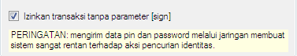

Transaksi IP tanpa Sign
Pada versi 3.6.8 transaksi IP ke OtomaX mengharuskan Sedoter (Pengambil Stok) mengirimkan parsing/format transaksi dengan menggunakan Sign (OtomaX) dimana ini akan menjadi problem ketika Sedoter Anda bukan pengguna OtomaX, info lengkap klik disini, klik disini dan klik disini. Nah, pada versi 3.6.9 ini terdapat pembaharuan berupa adanya pilihan agar Sedoter dapat transaksi IP tanpa harus menggunakan Sign (OtomaX), sehingga transaksi IP di versi ini atau lebih tinggi dimungkinkan dapat memakai Sign atau tanpa Sign (tergantung setting Anda). Pilihan ini tersedia di modul IP Center dan juga IP Gateway (- Center). Perlu Anda ketahui 2 modul tersebut hanya tersedia di edisi tertentu, info lengkap klik disini. Bila versi OtomaX Anda belum 3.6.9 update dahulu klik disini; dan bila edisi OtomaX Anda belum terdapat modul IP Center dan IP Gateway (- Center) upgrade dahulu klik disini; dan bila belum memiliki OtomaX beli dahulu klik disini
Untuk mengaktifkan transaksi IP tanpa Sign terbilang sangat mudah, akan tetapi sebaiknya klik disini, klik disini dan klik disini dahulu, baru kemudian simak yang berikut ini:
IP Center
- Pilih modul IP Center -> klik kanan -> klik Setting
-
Centang cekbox: izinkan transaksi tanpa parameter [sign]

- Klik tombol Save
- Selesai
-
Syntax transaksi IP (untuk Sedoter) menjadi:
trx?product=[product]&dest=[tujuan]&refID=[trxid]&memberID=[memberid]&pin=[pin]&password=[password]
IP Gateway (- Center)
- Pilih modul IP Gateway -> klik kanan -> klik Setting
-
Centang cekbox: izinkan transaksi tanpa parameter [sign]
- Klik tombol Save
- Selesai
-
Syntax transaksi IP (untuk Sedoter) menjadi:
trx?product=[product]&dest=[tujuan]&refID=[trxid]&memberID=[memberid]&pin=[pin]&password=[password]
Kemudian, bila Anda memiliki pertanyaan-pertanyaan seputar tehnis transaksi IP OtomaX silahkan kirimkan pertanyaan Anda ke alamat email support@otomax-software.com atau klik disini.
PERINGATAN: Transaksi IP tanpa Sign membuat sistem sangat rentan akan tindak kejahatan, disarankan untuk transaksi IP menggunakan Sign (OtomaX). Arahkan Sedoter untuk memakai OtomaX klik disini.